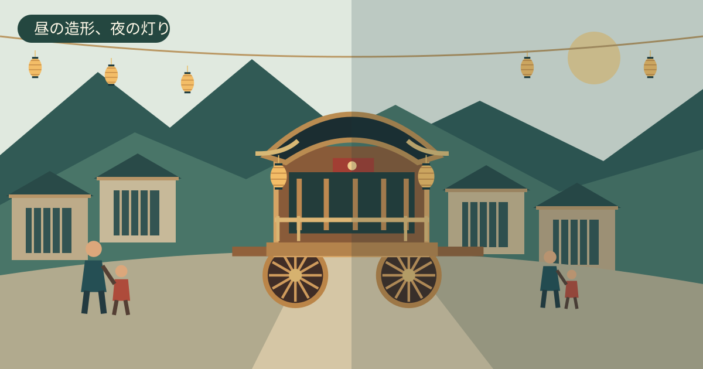
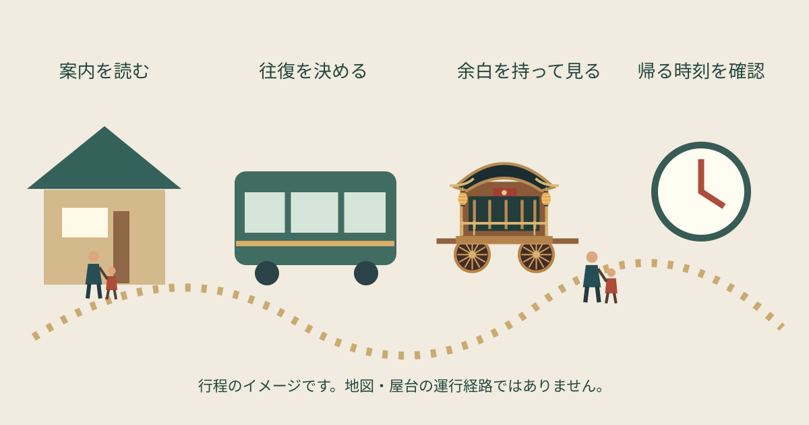

遠州の秋、町が祭りになる。
静岡県森町・森のまつり2026特集
202611.6 金 — 11.8 日
囃子が響く町並みへ。屋台の造形も、夜の提灯も、神事をつなぐ人の姿も。初めての見学と久しぶりの帰省に、秋の森町を楽しむための案内です。
日程と訪問のポイントへ静岡県周智郡森町／非公式の見学特集
情報確認・特集更新：2026年10月19日
まず押さえたいこと
秋の3日間を、自分たちのペースで。
開催1日目
開催2日目
開催3日目
日程の出典：森町観光協会・2026年10月1日のお知らせ
無料の「見物心得帳」を手に入れる
主な屋台の動きや見どころを載せた公式ガイド。森町役場・観光案内所で配布と案内されています。受取時間・在庫は事前にご確認ください。
観光協会へ：0538-85-6316駐車場・規制・運行時刻
開放場所、料金、規制時間、神事の細かな時刻は当年の公式ガイド・現地案内で確認を。過去の情報を2026年の予定として掲載していません。
車で行く前の確認事項へ →森のまつりへ。初めての人も、久しぶりの人も
遠くから聞こえる囃子に足を止め、町並みの向こうから姿を現す屋台を待つ。森のまつりを訪ねるなら、迫力だけでなく、木の造形、提灯の明かり、神事をつなぐ人の動きにも目を向けてみてください。町外からの日帰りにも、祭りに合わせた帰省にも、それぞれの楽しみ方があります。
この特集は、静岡県周智郡森町で行われる屋台祭り「森のまつり」の訪問案内です。町内の別の地区の祭礼や、産業祭「もりもり2万人まつり＆農協祭」とは別の催しです。検索で「森の祭り」「森の祭典」と探した方も、まず開催地と催しの名前を確かめてください。
2026年の開催日は、11月6日（金）・7日（土）・8日（日）。森町観光協会が10月1日に掲載した案内で確認しました。公式ガイド「見物心得帳」の無料配布も案内されています。予定を組む最初の材料として、この日程と公式ガイドの入手先を押さえましょう。
初めての見学では、見たい場面を一つ選び、行き帰りを確保してから滞在時間を決めるのがおすすめです。祭礼の進行や道路の状況に合わせて動ける余白を残すと、屋台を追いかけ続けなくても町の空気を楽しめます。以下の行程案や持ち物は本サイトの提案です。
2026年の日程と、公式ガイドの受け取り方
金曜日から日曜日までの3日間という開催日程は確認済みです。一方、この特集では、2026年の神事ごとの開始時刻、各屋台の運行経路、交通規制の区間・時間、祭り用駐車場の開放条件までは確認できていません。日付の確定と、細かな運行予定の確認は分けて考えてください。
観光協会によると、「見物心得帳」には主な屋台の動きや見どころが盛り込まれ、森町役場や観光案内所で無料配布されています。町外から訪れる場合は、配布先の場所、受け取れる日時、在庫を事前に問い合わせておくと、当日になって探し回る負担を減らせます。
役場で配布するという案内を、そのまま祭りの夜間や土日にも窓口が開くという意味には受け取れません。受取時間が合わないときは、観光協会に当年の案内を確認できる方法を尋ねてください。本ページから公式のお知らせと問い合わせ電話へ進めるようにしています。
古い案内には開催日が11月1日から3日と記されたものもあります。町の歴史資料は祭りの由来や神事の意味を知る資料として使い、今年の訪問日には2026年の発表を使います。保存した画像や家族から送られたパンフレットも、表紙の年度と曜日まで見てから利用しましょう。
屋台・囃子・舞児還し。三つの見どころ
町の紹介では、森のまつりは14台の屋台が曳き廻される地域の大切な行事とされています。屋台という言葉は、ここでは祭礼で曳く山車を指します。飲食の露店だけを想像すると見どころを取り違えるため、木組みや彫刻、大きな車輪、提灯などにも注目してみてください。
町の歴史資料には、御所車型の二輪屋台と、笛・太鼓・鉦による囃子が紹介されています。昼は造形や曳き手の動き、夜は提灯がつくる表情というように、時間によって見方を変えられます。止まっている屋台でも勝手に触れたり乗ったりせず、見学位置は現地の案内に従います。
舞児還しは、神前で舞を奉納した舞児を各町内の屋台に乗せ、家まで送り届ける行事として町が説明しています。写真の迫力だけでなく、神事を終えた子どもを地域が送る場面と知って見ると、祭りの意味が伝わります。今年の実施時刻や見学できる場所は公式ガイドで確認してください。
三島神社の観光案内は、舞の奉納、屋台の曳き廻し、練り、夜の提灯に彩られた町の様子を紹介しています。祭りは神社と町並み、地域の人の営みがつながる時間です。目当ての場面に間に合うことだけを優先せず、神事や移動の邪魔にならない位置から楽しみましょう。

電車で行く。遠州森駅を起点に考える
鉄道で訪ねるときは、天竜浜名湖鉄道の遠州森駅を起点に行程を考えられます。駅の公式案内には所在地、時刻表、設備が掲載されています。町なかに着いてから帰りを調べるのではなく、自宅側の路線も含めて往復の接続を確認し、到着予定と帰宅予定を一緒に決めてください。
東京・静岡方面や名古屋方面から新幹線を使う場合は、掛川で天浜線へ乗り継ぐ経路が候補になります。浜松側からは出発地によって適した経路が変わるので、乗換案内と鉄道各社の公式時刻表を照合してください。ここでは未確認の最終列車時刻や所要時間を固定して掲載していません。
遠州森駅から見学先まで歩く時間に加えて、人の流れを待つ時間や迂回の余裕を設けます。日常の地図アプリが示す最短経路も、祭りの時間帯にそのまま通れるとは限りません。駅、見学地点、休憩先を確認し、屋台の進路を横切らずに戻れる道を現地で確かめましょう。
帰りは最終列車だけでなく、その前の候補も一つ控えておくと判断しやすくなります。駅へ戻る時刻を家族で決め、時計の通知を使う方法もあります。遠州森駅の公式ページでは一般トイレの設備を確認できますが、祭りの仮設トイレの位置や夜間の利用条件は別に確認が必要です。
車で行く。駐車場と交通規制は当年の案内で
車での来訪では、駐車できる場所を出発前に決めることが大切です。本サイトでは10月19日時点で、2026年の祭り用駐車場について、開放場所・台数・料金・入出庫時間を一組の公式資料で確認できていません。駐車場がないという意味ではなく、この特集で確定できていない項目です。
観光施設の通常の駐車場案内、夏の花火大会の駐車場図、過去の森のまつりの案内は、それぞれ利用条件が異なります。役場や学校、店舗、神社の敷地を、今年も祭りのために使える場所だと決めつけないでください。臨時駐車場が案内されたら、対象日と出入口を確かめて利用します。
交通規制は通行止めの場所だけでなく、始まる時刻と終わる時刻まで確認します。入った道から同じように出られるとは限らないため、帰る方向も合わせて見ておくと安心です。家族を送迎する場合は、屋台や歩行者の動きを妨げない乗降場所を事前に相談してください。
周辺で空きを探すための路上待機や、住宅の出入口をふさぐ駐車は避けます。駐車先を確保できない場合は、鉄道利用に切り替える、到着時間や訪問日を変えるなどの選択肢を残しましょう。駅の駐車場も無条件で祭り客が使えるとは考えず、管理者の利用案内に従います。
子ども連れ・歩く距離が気になる方へ
子どもと出かけるなら、最初から長時間の見学を目標にしない行程をおすすめします。明るいうちに駅から町並みの様子を確かめ、無理なく見られる場所で屋台を待ち、疲れる前に休憩へ移る流れです。これは混雑が少ない時間を保証する案内ではなく、途中で切り上げやすくする提案です。
屋台の車輪脇、綱の内側、進行方向の前方、曲がり角では、撮影のために立ち止まらないでください。人が集まる場所では子どもから目を離さず、後ろへ下がれる余地を確認します。近づけばよく見えるとは限らないので、現地の係員の指示を聞き、通行の流れを優先しましょう。
ベビーカーや車いすで訪れる方は、段差、狭い道、休める場所、利用できるトイレを行程に合わせて確認します。三島神社の観光案内には階段の記載があります。境内と町なかを同じ移動条件だと考えず、必要に応じて同行者と見学範囲を決めてください。列車の乗降支援は鉄道会社へ相談できます。
家族が離れたときの集合場所は、移動する屋台ではなく、位置が変わらない目印にします。携帯電話がつながらない場合も想定し、子どもに大人の連絡先を持たせる方法があります。トイレを探す役、荷物を持つ役など、小さな分担をしておくと見学中の負担を減らせます。
写真・雨・夜の見学で覚えておきたいこと
写真を撮るときは、画面だけを見て後ろへ下がらないことが第一です。通路に三脚や荷物を広げず、屋台や人の進路を空けます。神事や子どもの近くで撮影するときは現地の案内を確認し、近づいてよい場所と撮影できる場面を同じものと考えないようにしましょう。
見学中の写真を公開する場合は、写り込んだ人の顔、家の表札、車の番号にも気を配ります。地域の人にとってはいつもの暮らしの場所です。私有地へ入ったり、玄関先を撮影場所として占有したりせず、道路や見学可能な範囲から町並みを楽しんでください。
雨天時の神事や屋台運行について、この特集では2026年の変更基準を確認できていません。「雨でも必ず実施」「小雨なら予定どおり」とは決めず、出発前と現地到着後に主催者側の案内を確認します。交通機関の運行情報も別に見て、天候が悪化したときに帰れる行程を残します。
夜まで滞在する日は、歩きやすい靴、羽織れる服、充電した携帯電話を用意するのがおすすめです。雨具は周りの視界や通行を妨げない使い方を考えます。帰りの道を明るいうちに確認し、疲れや寒さが強くなる前に切り上げることも、翌日まで気持ちよく楽しむための選択です。
半日見学と帰省。目的から組む行程案
初めての日帰りなら、「駅に到着、案内を確認、町並みを歩く、一つの場所で見学、休憩、駅へ戻る」という半日の組み立てを提案します。時刻は公式ガイドと列車に合わせて決めます。すべての屋台を見ようと範囲を広げるより、一度立ち止まって音や造形を楽しむ余白をつくりましょう。
夜の雰囲気を見たい方は、日没後の見学そのものより先に帰宅手段を決めます。食事を取る時間と場所、駅へ歩き始める時刻を押さえておけば、屋台の動きが予定と違っても落ち着いて調整できます。最終便に乗れなかった場合の費用や移動手段まで考え、無理な接続は避けてください。
帰省を兼ねる方は、家族との食事や訪問の時間と、祭りを見る時間を分けて共有すると予定を合わせやすくなります。実家に駐車できる場合でも、前の道がいつ通れるか、近所の祭礼の動きを妨げないかを確認します。久しぶりの帰省では、昔使った道や駐車場所が今も使えるとは限りません。
次郎柿や森のお茶、和菓子を買う時間を加えるのも一案です。ただし、祭りの日の営業や商品の在庫は各店舗の確認が必要です。買い物を詰め込みすぎず、手荷物が増えたら一度置ける場所を考えておきましょう。近くの観光地へも立ち寄る場合は、それぞれの移動時間を別に見積もります。
良い点。町の文化を、歩く速さで感じられる
森のまつりの良さは、屋台だけを切り離して鑑賞するのでなく、神社、道、家並み、人の動きが続く町の風景として見られることにあります。町が暮らしの紹介に祭りを置いている点からも、地域にとっての位置づけが伝わります。訪問者も、そのつながりに目を向けると見学が深まります。
昼と夜で町の見え方が変わることも魅力です。昼は屋台の細かな造形や通りのつながりを、夜は灯りと囃子の重なりを楽しめます。どちらか片方だけでも、その時間の良さがあります。子どもの体力や帰りの列車に合わせて、見学する時間を選べるようにしておきましょう。
無料の公式ガイドを配布する案内があることは、初めての来訪者にとって大切な手掛かりです。町なかで何を見るかという情報を、現地の進行と結びつけて考えられます。一般的な観光紹介と当年の案内を組み合わせることで、興味を持つところから実際の訪問へ進みやすくなります。
森町に実家がある方にとっては、家族の予定を合わせ、地域とのつながりを確かめる機会にもなるでしょう。ただし、参加する人、見学する人、普段どおり仕事をする人で一日の使い方は違います。誰もが同じ過ごし方をすると思わず、相手の都合を聞くことが気持ちのよい帰省につながります。
注文したい点。当年情報を出発前に確認しやすく
町外からの訪問者が迷うのは、魅力があるかどうかより、どこに停められるか、何時に帰れるか、どの道を通れるかという具体的な点です。公開ウェブ情報を調べた範囲では、今年の日程と紙のガイド配布は確認できましたが、交通規制・駐車場・詳細時刻をまとめた資料の内容までは確認できませんでした。
これは主催者が案内を用意していないという断定ではありません。紙の配布や現地掲示など、本サイトが確認できていない情報がある可能性があります。情報が足りないときほど、過去の資料から空欄を埋めず、何が未確認なのかと、どこに尋ねるかを一緒に示すことが必要だと考えます。
訪問者向けには、年度を大きく記した規制図、駐車場所ごとの利用条件、トイレ、変更時の連絡先が一か所で読めると便利です。本特集では、確認済みの情報と確認が必要な項目を冒頭に分けて載せました。詳細が変わった場合も、日程だけを見て行動せず公式案内へ戻ってください。
見学のしやすさには、情報の量だけでなく、現地の人が案内しやすいことも関わります。問い合わせる際は「何月何日に、何人で、電車か車か、何時ごろまで見たいか」を短く伝えると、必要な確認に絞れます。祭礼を支える人の仕事を増やしすぎない聞き方も、訪れる側にできる配慮です。
対案・結論。出発前の確認を四つに絞る
一つ目は訪問日と見たい場面です。11月6日から8日のうち、行ける日を決め、当年の公式ガイドでその日の進行を確認します。祭りの全体像を予習したうえで、現地で何を見るかは絞る。これだけでも、家族がそれぞれ違う予定を思い描く行き違いを減らせます。
二つ目は交通です。列車なら帰路の接続と駅に戻る時刻、車なら当年の駐車条件と規制を確認します。交通手段が決まると、歩ける範囲と滞在時間も決めやすくなります。車を停める場所が未確定のまま会場近くへ向かう計画は避け、別の行き方を用意してください。
三つ目は一緒に行く人の休憩と集合です。トイレ、食事、歩く距離、離れたときの目印を共有します。子どもや高齢の家族が疲れたら、予定の途中でも帰れるようにしておきます。誰か一人だけが予定を把握するのでなく、全員が見られる短いメモにしておくと役立ちます。
四つ目は当日の変更情報です。天候、運行、現地の案内を出発前に確認し、到着後も係員の指示に従います。下の持ち物・確認リストは、この四つを忘れないための補助です。全部に印を付けることより、自分たちの行程に残っている未確認項目を見つけるために使ってください。

大石の視点。祭りの日に感じる町と、普段の暮らし
私が地域を紹介するうえで大切だと考えるのは、祭りのにぎわいと普段の暮らしの両方を見ることです。人が集まる日の道の使われ方を知ると、住宅や店舗が町の中でどうつながっているかにも目が向きます。にぎやかな一日だけで、その地域の暮らし全体を決めつけない姿勢を持ちたいと思います。
移住や二拠点生活に関心が生まれたら、別の日にも歩いてみてください。駅までの道、買い物、雨の日の移動、車の出入りを普段の時間帯に見ると、祭りの日には分からないことを確かめられます。地域への参加の仕方や負担も家庭や地区で異なるので、想像だけで判断しないことが大切です。
実家に立ち寄る方は、必要であれば家族の連絡先、鍵の保管場所、次に訪れる予定を短く残しておくと役立ちます。家や土地のことまで話す場合は、住所や登記の書類、道路、境界、農地の有無など、確認した事実と分からない点を分けます。祭りの席で結論を急ぐ必要はありません。
まずは祭りを楽しみ、帰省や訪問のよい時間をつくる。そのうえで住まいや実家のことも調べたくなった方には、このページの最後に関連ガイドを置きました。家を持ち続ける、管理を相談する、家族で整理するなど、今すぐ売る以外の考え方も含めて次の一歩を選べます。
まとめ。見たい場面と、帰る時刻を決めて出かける
2026年の森のまつりは11月6日（金）から8日（日）。今年の案内を受け取り、屋台や神事の意味を少し知ってから訪ねると、見える風景が広がります。詳しい進行、駐車場、交通規制については、このページの未確認欄を目安に公式の案内を確かめてください。
町外からでも、久しぶりの帰省でも、予定を詰め込みすぎないことが楽しむ余裕につながります。見たい場面を一つ選び、歩く範囲を決め、帰る時刻を共有する。地域の人と同じ道を使う訪問者として、屋台の進行と暮らしを尊重しながら秋の森町を楽しみましょう。
出発前に、さっと確認
家族で確認する4項目
チェックはこの画面での確認用です。個人情報は入力しません。
Q & A
よくある質問
2026年はいつ開催？
11月6日（金）〜8日（日）です。森町観光協会の2026年10月1日のお知らせで確認しています。
見物心得帳はどこでもらえる？
観光協会は、森町役場や観光案内所での無料配布を案内しています。受取時間と在庫は問い合わせ先へ確認してください。
無料駐車場はある？
本特集では、2026年の祭り用駐車場の開放条件を確認できていません。通常の施設駐車場や他の催しの駐車場図を流用せず、当年の案内をご確認ください。
舞児還しは何時から？
神前で舞を奉納した舞児を家まで送る行事です。今年の開始時刻は本特集では未確認のため、公式ガイドや現地案内でご確認ください。
雨でも見学できる？
今年の雨天変更基準は本特集では未確認です。主催者側の案内と鉄道の運行情報を出発前に確認してください。
公式情報・確認先
2026年10月19日に確認。歴史資料は祭礼の説明に使用し、今年の日程には当年の案内を使用しています。本特集は主催者の公式サイトではありません。
- 2026年・森のまつり公式ガイドとポスターの配布森町観光協会
- 三島神社と森のまつり森町観光協会
- 森の祭・かさんぼこ（祭礼の歴史資料）静岡県森町
- 暮らしの森町自慢（屋台と地域の文化）静岡県森町
- 遠州森駅・駅設備と時刻表天竜浜名湖鉄道
- 運賃と時刻表天竜浜名湖鉄道
- 交通案内森町観光協会
編集：大石浩之／初回ガイド公開：2026年8月10日／特集更新：2026年10月19日。公開情報の調査をもとに作成し、現地取材や2026年の開催風景を記録した記事ではありません。挿絵は編集用のイメージです。